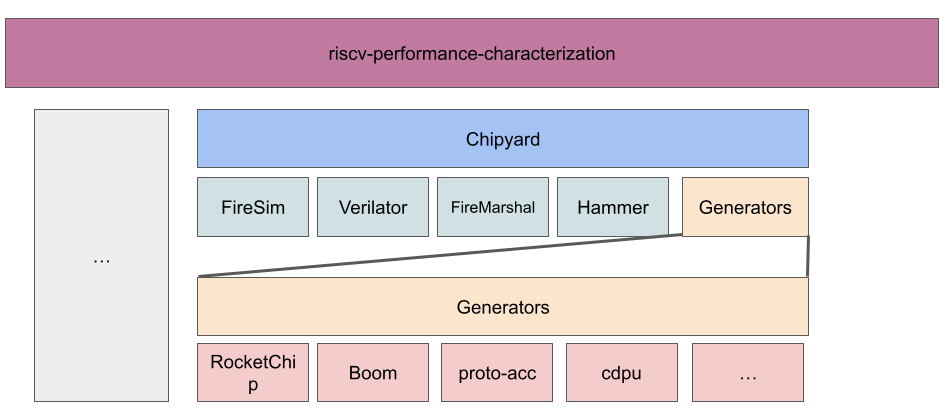

Protocol Buffers Hardware Accelerator - ICE-RLab Docs
Hello 👋, welcome.
These docs are specific to the work done by the ICE Research LAb that expands on the Hardware Accelerator for Protocol Buffers by S Karandikar, et. al.
Getting Started
Protocol Buffers
If you're new to Protocol Buffers, we recommend you start by reading and following the following pages from the official Protocol Buffers Documentation:
- Read the Overview page, and
- Follow the C++ Protocol Buffer Basics Tutorial.
Tip
While completing the tutorial pay attention to the components of Protocol Buffers, and their role in the serialization/deserialization workflow.
Hopefully, you also noticed that protocol buffers are also referred to as "protobufs" for short.
Protocol Buffers Hardware Accelerator
Once you have a decent understanding of protocol buffers, go ahead and read the paper:
- A Hardware Accelerator for Protocol Buffers by S Karandikar, et. al.
Tip
As you read the paper keep your experience from the tutorial in mind so that you notice where the hardware accelerator makes things different or the same according to the paper.
Protocol Buffers Hardware Accelerator Project Structure
Okay okay, you got the fundamentals down. The goal here is to try to create a map in your head of the pieces involved and some of the connecting roads between them.
Important
Git submodules is the backbone of the structure of this project. Here are a couple of resources to get you up to speed/refresh you on git submodules:
As you saw in the artifact appendix of the accelerator paper, the project consists of five git repositories:
- protobuf-library-for-accel-ae,
- protoacc (in the paper it's called protoacc-ae, in GitHub it's called protoacc, we'll refer to it as protoacc),
- firesim-protoacc-ae,
- chipyard-protoacc-ae,
- HyperProtoBench
Don't panic (just yet). We'll go one by one.
- ice-rlab/protobuf-library-for-accel-ae: Our fork of the protobuf compiler, C++ runtime and library (header files) with support for the accelerator and home to these docs.
- ice-rlab/protoacc: Our fork of the accelerator design, software (library for custom instructions, microbenchmarks, FireSim workloads), and scripts (that automate installation, testing and simulation).
- sagark/firesim-protoacc-ae: Top-level FireSim environment with support for protocol buffers accelerator.
- sagark/chipyard-protoacc-ae: Chipyard RISC-V SoC generation environment with protocol buffers accelerator.
- sagark/HyperProtoBench: Serialization/deserialization benchmarks.
Why have we only forked the first two repos? Those are the only two repos we've done work on so far.
What is FireSim and Chipyard? Buckle up your seatbelt 💺...
Hardware Accelerator Platform
Chipyard is the platform used to design and simulate the protocol buffers accelerator. The following diagram illustrates how FireSim fits in with Chipyard as well as other tools and how Chipyard fits within the ice-rlab/riscv-performance-characterization work:

To understand how the protocol buffers accelerator was designed, simulated and tested using FireSim and Chipyard,
- watch the videos of the full-day tutorial at ASPLOS 2023
- read through the official Chipyard and FireSim docs.